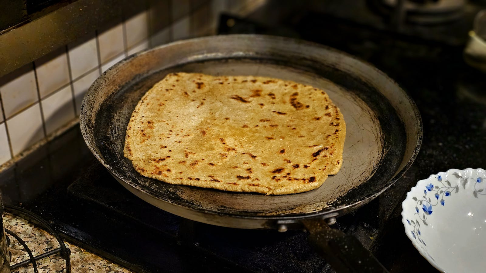
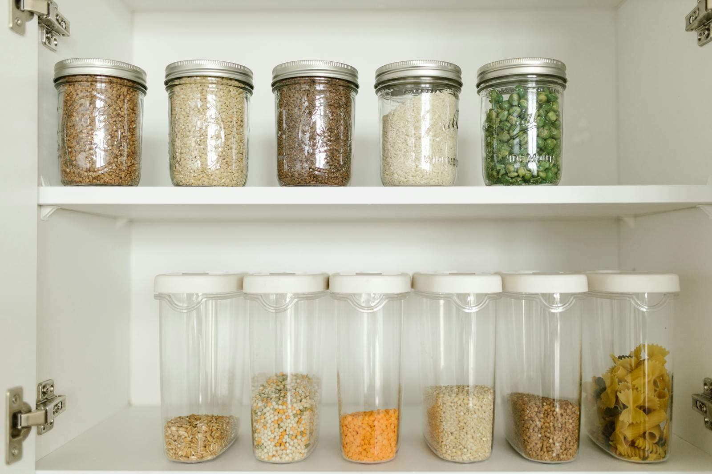

The Journal
Notes from the chakki.
Recipes, kitchen lore, farmer profiles and the occasional opinion. Read slowly, ideally with chai.

The case for the bhakri, and a recipe that finally works.
Jowar and bajra make the most honest breads in the country. Here is the technique we settled on after a year of failed attempts.
Read · 6 min
Rajaram of Bikaner, and the bajra that started it all.
Read · 4 min